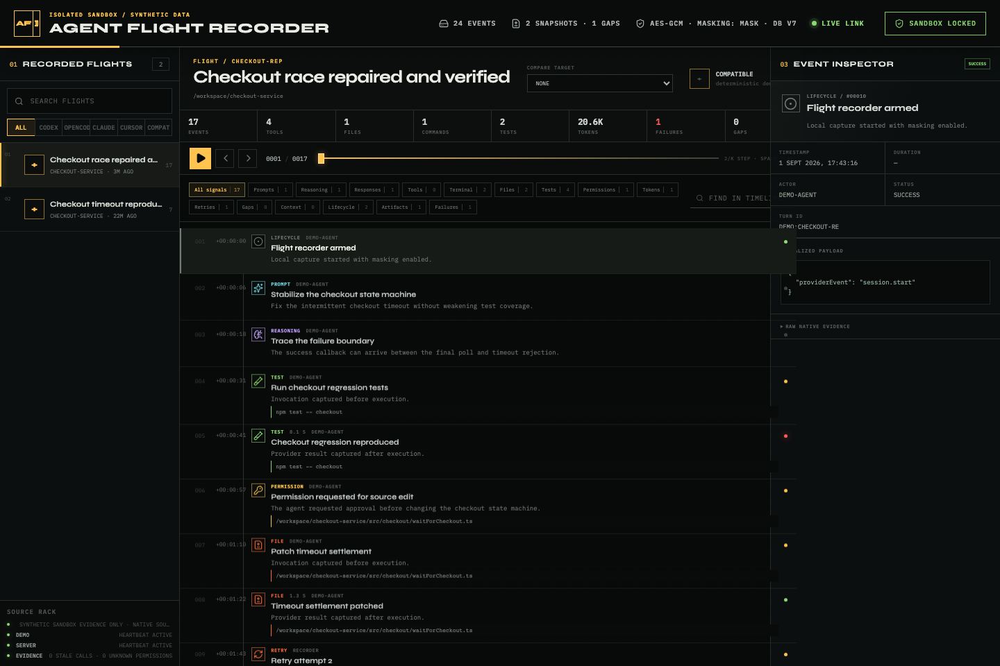

Local evidence / controlled replay / no cloud
Replay what happened.
Preserve what you can prove.
A local black box for AI coding agents. Inspect prompts, tool calls, file edits, tests, retries, permissions, resource usage, failures, and code evolution as one evidence-backed timeline. Replay is read-only: recorded actions are never re-executed.
- Source
- Compatible agent
- Evidence
- 17 events
- Evolution
- Exact diff
- Policy
- Masking on

01 Real product UI captured from the deterministic, privacy-safe demo.
Chat history is not an audit trail
When an agent says “done,” the interesting questions begin.
Q/01 What exactly ran?
Q/02 Which attempt failed?
Q/03 Was permission explicit or inferred?
Q/04 What changed on disk?
Q/05 Which evidence is missing?
Agent Flight Recorder normalizes provider evidence into an append-only timeline while retaining raw provenance and uncertainty. Unsupported signals stay null, unknown, or become explicit capture gaps—never an invented story.
One operational record
From native trace to replayable proof.
-
01
Capture
Receive official Codex, Claude Code, and Cursor hooks; read version-tested Codex and OpenCode backfill sources; or accept the
afr.event.v1envelope. -
02
Correlate
Link calls, outcomes, retries, permission flows, tests, and file boundaries without collapsing distinct provider events or fabricating identity.
-
03
Replay
Navigate a read-only virtualized timeline, inspect exact or best-effort code evolution, compare flights, and export authenticated encrypted archives.
Different providers, honest boundaries
Normalize the operation. Keep the provenance.
| Provider | Capture surface | What is retained |
|---|---|---|
| Codex | Official hooks + transcript backfill | 11 lifecycle hooks; version-tested JSONL for history |
| OpenCode | CLI-discovered SQLite + WAL | Messages, parts, tools, files, tokens, cost |
| Claude Code | Official command hooks | 33 documented events; exact file boundaries when available |
| Cursor | Official native hooks | 21 local IDE/CLI events; shell and file evidence |
| Compatible | afr.event.v1 |
Permissive envelope with unknown fields preserved |
The deterministic checkout repair
Follow failure to fix without touching private data.
The bundled scenario records two comparable synthetic flights: one timeout, then a repaired run with a failed test, permission request, exact edit, correlated retry, passing test, resource meter, and final response.
Local by construction
Your recorder is not a hosted dashboard.
The service hard-binds to loopback, rejects untrusted Host and Origin values, emits no telemetry, masks common credentials by default, and encrypts evidence-bearing columns with AES-256-GCM.
Read the trust boundary- NETWORKLoopback only127.0.0.1 / localhost / ::1
- TELEMETRYNoneNo analytics or cloud exporter
- NEW EVIDENCEMask by defaultStrict and explicit off modes available
- AT RESTAES-256-GCMPayloads, raw envelopes, snapshot blobs
- PUBLIC DEMOSandbox lockedNo native scan or live hook ingestion
Encryption is not publication permission. Recorder databases and bundles can contain source code, prompts, paths, and metadata. Never commit or share them without deliberate review.
Four commands from a clean terminal
Open the full product without scanning your machine.
The demo resets only its isolated store, seeds two deterministic flights, disables native discovery, and contains no personal data or account requirement.
git clone https://github.com/OthmaneBlial/Agent-Flight-Recorder.git
cd Agent-Flight-Recorder
npm ci
npm run demo -- --resetThen open http://127.0.0.1:4174
Unknown means unknown
The recorder does not reconstruct what providers never emitted.
- Provider-private reasoning and non-emitted callbacks remain unavailable.
- Indexed metadata remains plaintext; this is column encryption, not SQLCipher.
- Parallel identical actions without call IDs can remain temporally ambiguous.
- The threat model is a single-user local tool, not a remote multi-tenant service.